Hillshades and sunset atop the tallest fire-lookout tower in the Forest Service’s California inventory.
October 11, 2025•High Point Lookout•Palomar Mountain
There is a kind of mountain that keeps its own time. You leave the valley by one clock and arrive on the summit running by another — one told in light, in wind, in the slow drift of a cloud. What follows is the log of a single day at High Point, kept the way the tower keeps it: by the hour, in the present tense, because on a lookout the present tense is the whole of the job.
Before the day begins
Who keeps a fire lookout?
A fire lookout is a trained observer who holds one high, fixed station and finds wildfire the oldest way there is — by the first thread of smoke — then fixes its bearing and reports it before it grows. The role is older than the two-way radio, and by mid-century it was standardized across agencies: the Forest Service and the National Park Service each issued field manuals for it.14 The work asks for a particular temperament — the 1966 Forest Service handbook lists good eyesight, the steadiness to live in isolation for long stretches, fluency with map, radio and fire-finder, and the ability to think clearly and coolly in an emergency.4
The instrument and the tower
The lookout’s defining tool is the Osborne Fire Finder: a sighted brass alidade riding a circular azimuth ring over a map disk, designed by a Forest Service forester in the early 1900s to read a fire’s direction to the minute. The bearings are even built into the cab. High Point’s hand-lettered “180° S” marks south — because the fire-finder is oriented so its zero rides on the south side of the ring, letting the lookout read the azimuth on the near side without walking around the instrument and losing seconds.4 The towers were standardized too: the 1938 USDA Standard Lookout Plans set Service-wide steel and timber designs from 30 to 120 feet — the type system that gives High Point its CL-30 cab on an L-1600 tower.5
From the field manualUSFS · 1966
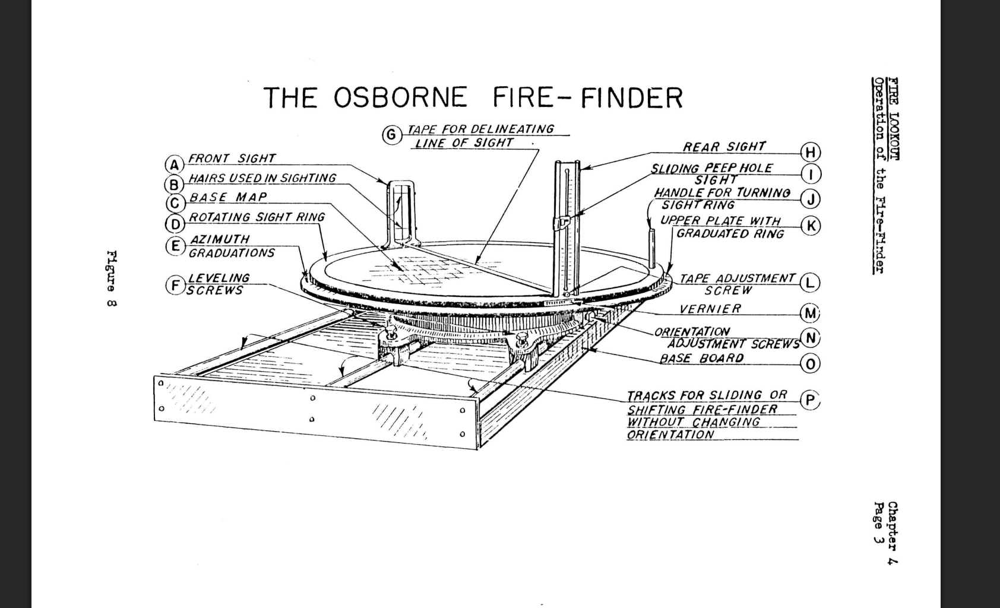
The Osborne Fire Finder — sights, rotating sight ring, azimuth graduations, and the base map the lookout sights across. (Handbook Fig. 8)
To take a fire, the lookout lines the front-sight hair and rear-sight slot on the smoke, then reads the azimuth off the vernier — degrees and minutes — and the vertical angle off the sliding rear sight. Two towers’ crossed bearings fix a fire on the map.
USFS, Fireman’s Handbook, §34.11 (1966); NPS, Handbook for Fire Lookouts (1958).
High Point Fire Lookout
The first tower here went up in 1935, an Aermotor steel structure raised by the Civilian Conservation Corps for the Forest Service; the current all-steel tower replaced it in 1964 — a 13×13-foot cab on a 67-foot frame, the tallest lookout tower remaining in the Forest Service’s California inventory.2 The Cleveland National Forest last paid a staffer to sit it in 1992; vandals stripped the interior in 2005, and it was restored — new glass, cabinets, flooring — in 2009.2
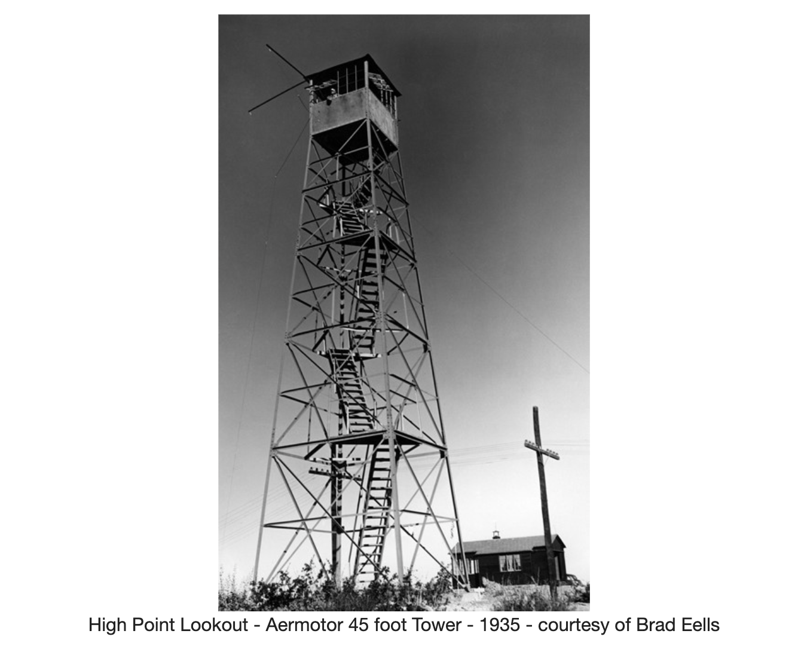
► 2 photos
High Point’s first tower — an Aermotor steel lookout, 1935. Courtesy Brad Eells / FFLA-SDRC.
That same restoration year, volunteers of the Forest Fire Lookout Association, San Diego–Riverside Chapter, began staffing it again for fixed-point fire detection, and have held 100% fire-season coverage every year since 2013.2 It’s a living tradition, not a relic: even as camera networks spread across the ranges, the Forest Service is clear that they enhance human lookouts rather than replace them.6 The day below is one of those volunteer shifts.
The lookout network — San Diego & Riverside
USFS open data · FFLA-SDRC
☐ Coming in a later update: an interactive map of High Point and its neighboring fixed-point lookouts, loaded from USFS open datasets and the FFLA-SDRC tower index.
▲ High PointBoucher HillCuyamaca PeakHot Springs MtnLos PinosRed MountainSantiago Peak+ more
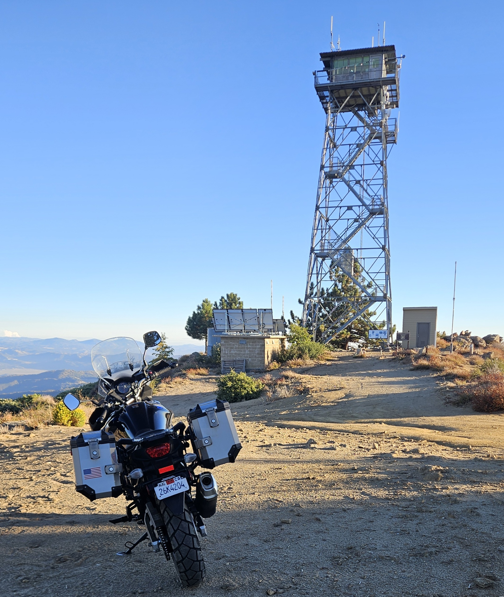
High Point Lookout on Oct. 11, 2025 — above the parking flat on Palomar Mountain, where the day begins.
THE SHIFT · OCT 11, 2025 · M. YASSIN, FFLA-SDRC
Before the ride.
Four o’clock in San Diego, and the day is already a checklist. The dawn prayer near five, then the load-out — and the load-out is the mission. High Point is off the grid: no running water, no power but a trickle held back for the radios. Whatever the tower needs for a day and a night rides up with me. Water first, and extra — enough to drink, enough to top off someone who’s run dry on the climb, enough to leave the place exactly as I found it. A backup of the essentials, in case the road or the weather turns.
And tucked in the kit, my own handheld ham radio. From a summit like Palomar there’s clean line-of-sight to more than one repeater, and a peak this high is the kind of place an operator keys up just to put it on the air. Bike loaded, balanced, checked — and I roll out into the dark: roughly sixty to ninety minutes of empty pre-dawn highway from most of San Diego County before the road tips up and starts to climb the back of Palomar.
Checking in with dispatch.
About two miles below the summit I pull into the Palomar station. Before anyone climbs into a lookout, the forest has to know it will be manned — so I get on the radio to Cleveland dispatch, give my call sign, and report that I’m on my way up to staff High Point for the day. The board by the door makes it official: date, name, the bike I rode in on. This is the first half of a two-step handshake; the second comes at the top, when the tower itself goes in service.
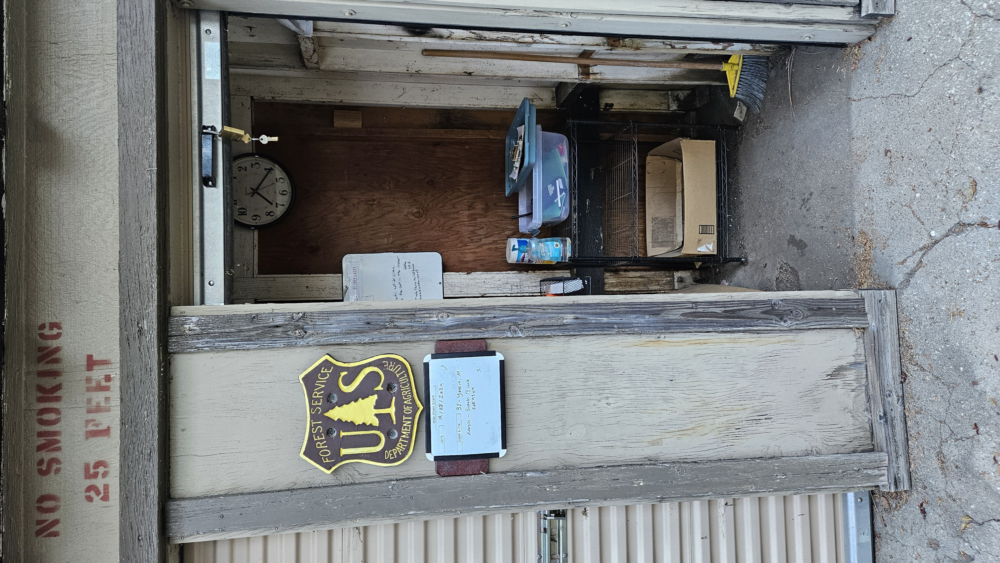
► 2 photos
Checking in at the Palomar station — the High Point staff board, date and rider logged. (Photos from a previous shift, Sept 28, 2024.)
Arrival, and in service.
From the station the pavement quits. The way up is a 4×4-only climb of locked gates and private road threading the Caltech observatory land toward the top of the mountain. The last of it drops me at the neck of the tower, where the gate people on the mountain just call the jurassic gate waits — a massive steel slab on two tight switchbacks, a couple hundred feet below the cab, swung open by hand and locked again behind. Then the dirt lot, a little after eight-twenty. Gear off, helmet on the mirror.
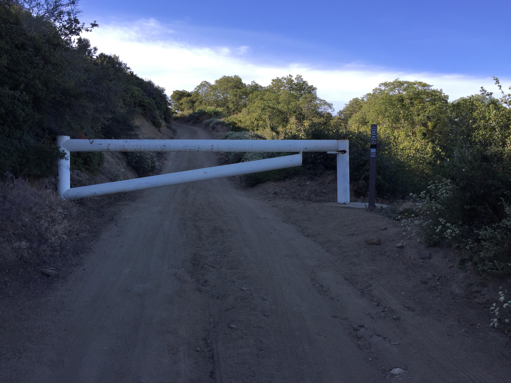
► photo
The jurassic gate — a couple hundred feet below the cab, opened by hand and locked behind.
The tower stands above me closed and quiet, and now the real work of going in service begins. You bring a lookout to life from the top down: unlock and climb, switch on the radio, take the first weather, and call Cleveland dispatch to put High Point officially on watch. The fire-finder gets its own waking-up — leveled, its sight-hairs checked for plumb, re-oriented on a landmark whose bearing is posted in the cab, so every azimuth called in all day is true.4
Field note · A federal tower, run by volunteers
High Point is staffed under a partnership between the U.S. Forest Service and the Forest Fire Lookout Association (FFLA), San Diego–Riverside Chapter. Volunteers train to standard, sit the tower on the Forest’s official detection schedule, and report weather and smoke straight to USFS dispatch — the same fixed-point role a paid lookout once filled here, now carried by the chapter that has covered every fire season since 2013.2
The haul.
Going in-service is done — the tower’s on watch — but my kit for the night is still at the base. So I send the blue basket down the pulley line first, then climb down the stairs after it. From the top rail the ground is a long way off — a water tank, a scatter of solar panels, the switchback road folding away south — and the basket drops through all of it on a single black rope. At the base I load the duffel and see to the fuel sticks, then haul the whole load back up as I climb.
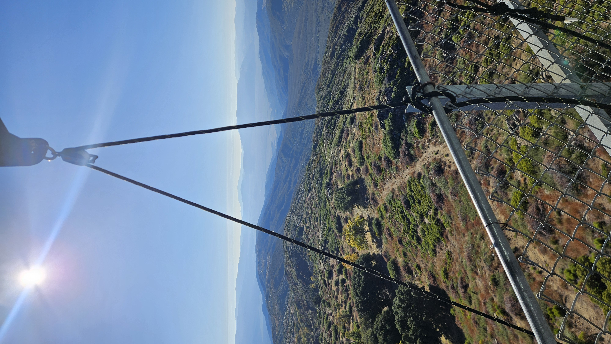
► 3 photos
08:49 — Down the pulley line. The basket drops the full height of the tower on one rope.
Field note · The fuel sticks
A set of standardized wooden dowels is left out in the weather and weighed; because the dry weight is known, the extra is water, and the reading is a direct measure of how dry — how ready to burn — the forest is. It is one of the oldest fire-danger instruments there is, and it still feeds the number lookouts have always reported: the fire-danger rating, the modern descendant of the hand-computed Burning Index the older manuals describe.1
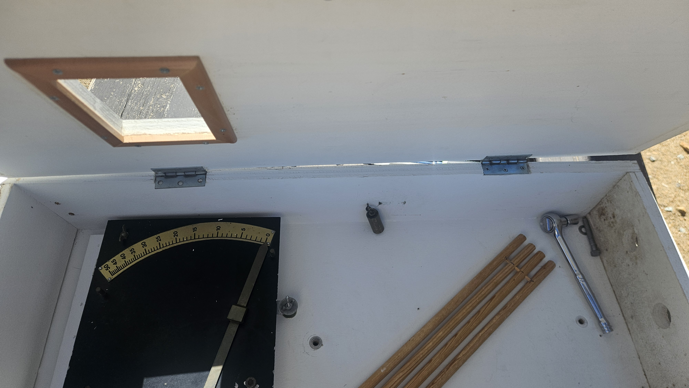
► 1 photo
The cabinet interior — fuel sticks and the 0–50 moisture scale.
The cabinet gives way.
When I open the fuel-stick cabinet, the trouble is in the door itself: the lock and the top hinge have both overloaded and torn loose from the wood. One good Santa Ana gust and the whole door comes off the mountain. I try a field fix — shifting the hinge, biting down what screws will still hold — but it won’t take. After I talk it over with the tower leader, we make the call: pull the cabinet, bag it, and set it in the base storage for off-site repair. By midday it’s down and stowed, waiting on a ride to the shop.
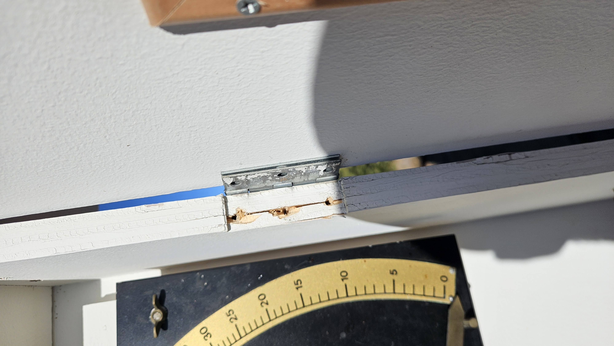
► 1 photo
08:53 — The top hinge, pulled clean out of the split wood.
Glassing.
“Glassing” is the word for it: working the horizon slow with the eyes and the binoculars, ridge by ridge. The manuals split it in two — a continuous, unfocused general observation of the whole country, and the intensive check: the seen area broken into roughly 45-degree sectors and searched clockwise, nearest ground first, four to six minutes a pass.4 The bearings are written into the cab — that “180° S” on the beam is the fire-finder’s south.
Two minutes in, something to the north catches me and the pulse jumps. The handbook has a name for exactly this: a false smoke — fog or a cloud puff mistaken for the real thing — and a rule, when in doubt, report it as a fire.4 But this one resolves. It’s San Jacinto Peak — ten thousand eight hundred feet of it, some thirty-three miles off to the north-northeast, wearing a single smooth lens of cloud parked dead over the summit like a lid. It doesn’t drift. It just sits there, the mountain’s own private weather, while the sky around it stays open and blue.
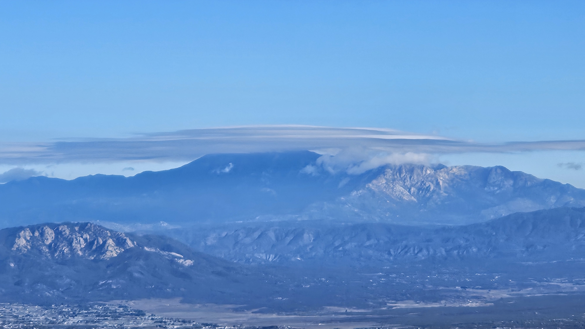
► 3 photos
09:30 — A lenticular cap sits motionless over the high peak to the north.
For a lookout the sky is an instrument. The old manuals teach cloud types precisely because they forecast fire’s drivers — lightning, sudden wind, rain — and flag altocumulus castellatus, those little turreted clouds, as a sign of an unstable atmosphere primed for thunderstorms.1 Thunderstorms mean dry lightning, and dry lightning means ignitions.
Southern California runs three seasons a lookout learns to read: late-summer monsoon moisture surging up from the southeast with dry lightning and flash flood; the soaking winter storms; and the autumn Santa Ana winds — dry offshore gusts that drop the humidity through the floor and drive the worst fires.3 So the morning weather isn’t a courtesy; it’s data, rolled into the fire-danger rating and up to the National Weather Service.
And the saucer over San Jacinto? A lenticular — altocumulus standing lenticularis. Moist air lifts over the peak and cools at the crest, condensing on the upwind side and evaporating downwind as fast as it flows through, so the cloud holds still while the wind pours through it. A false smoke, and a free read on the wind aloft.3
A golden eagle.
Just after ten, a big dark shape peels off the ridge below the catwalk and rides the slope’s morning thermal — long plank wings held in a shallow V, a wash of bronze across the nape when it banks into the sun. A golden eagle, working the updraft along the escarpment without a single wingbeat. This time the camera was ready: forty seconds of it riding the ridge before it slid over the shoulder of the mountain and was gone.
►Play clip · 0:4010:01 — A golden eagle working the updraft along the escarpment. Tap to play in a viewer.
Field note · The golden eagle
One of the largest raptors in North America — a wingspan past seven feet — and built for exactly this country. It can ride a ridge updraft for an hour barely moving a feather, then fold into a stoop that tops a hundred and fifty miles an hour. The name is literal: the lance-shaped feathers across the back of the head and neck catch the light gold, which is precisely what gave this one away as it banked.
The cap lets go.
By late morning the cap has let go. At dawn a single smooth lens sat hard over San Jacinto, covering the summit outright; now it has drifted a little east of the peak and gone soft — spreading wider and slowly burning off as the sun warms the air, the clean altocumulus standing lenticularis loosening into flatter, stranger plates. Fun-looking shapes by this point, nothing more — but shape and motion aloft are half a lookout’s weather, and putting the right name to what’s overhead is part of the watch.3
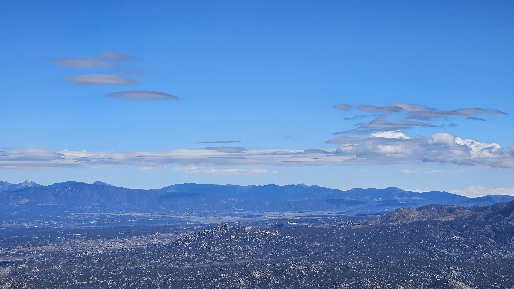
► 2 photos
11:05 — The dawn cap, drifted east of San Jacinto and softening as it burns off.
When I have to put a name to a cloud for a weather observation, I check it against the NOAA cloud chart — the field reference I keep for getting the right word into the report.
Midday closes the thread that opened at 08:53. With the tower leader’s sign-off, the failed fuel-stick cabinet comes off its mount — unbolted, carried down into the sun, and set in the base storeroom to wait for a ride to the shop.
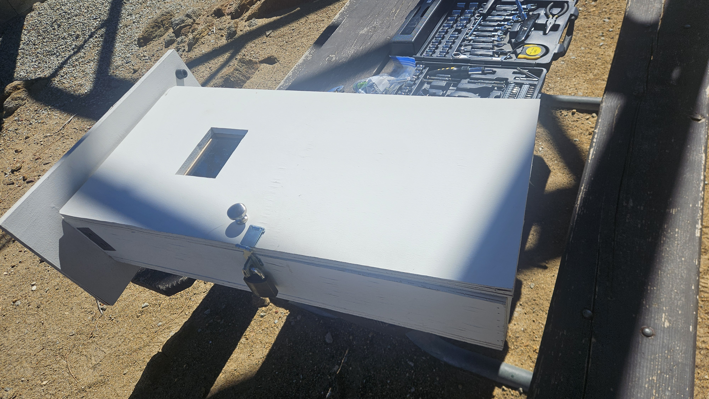
► 3 photos
12:20 — Off the wall: open with the failed hinge, off the pole into the sun, then stowed for off-site repair.
The oak-keepers.
A clatter starts up around the tower — a whole family band of acorn woodpeckers, red-capped and clown-faced, working their way up the legs to the water I keep out on the catwalk. Through fire season the lookouts set water at the tower, and a steady parade of birds climbs up for it; acorn woodpeckers live in tight cooperative family groups, which is why they turn up all at once, jostling and squabbling at the dish.7 On a long solo watch, the company is welcome.
►Play clip13:47 — The band comes up to drink from the water kept at the tower. Tap to play in a viewer.
Water down.
Mid-afternoon a biker tops out at the gate, run dry on the long climb in the heat — and the extra water loaded at the tower finds its purpose. I send some down; they head back to the trail topped off, steadier than they came.
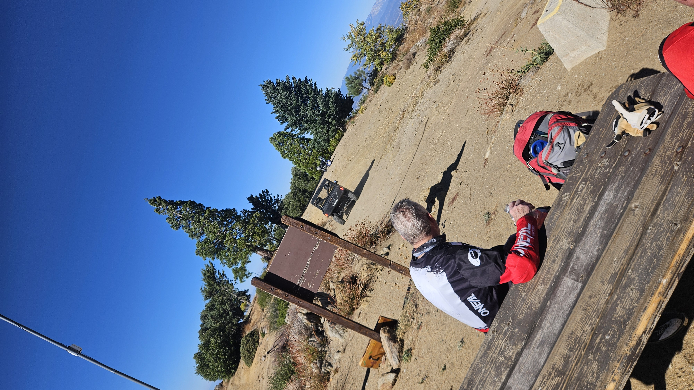
► photo
14:57 — A biker, run low on water at the top of the climb.
Field note · The tower as a backstop
A staffed lookout is one of the few fixed, reliable points in a lot of empty country. Out here someone can run out of water, lose the trail, or turn an ankle miles from a road or a cell signal — and the tower is a known place with water, a little food to spare, shade, and a radio that reaches dispatch when nothing else will. Finding fire is the headline duty; being a hand for the backcountry is the quiet one that comes with the post.
The crew comes up.
Almost the same hour, the working forest arrives: a U.S. Forest Service crew from the Palomar district rolls up to the tower in a Polaris UTV. They sign in at the weathered 6,140-foot summit marker, and I wave them up the stairs. From the catwalk they get the one thing a lookout has all day and a ground crew almost never does — their own district laid out below in a single bird’s-eye sweep: the roads and stands and old burn scars they work all season, seen whole. For a few hours the volunteer watch and the paid crew share the same summit.2
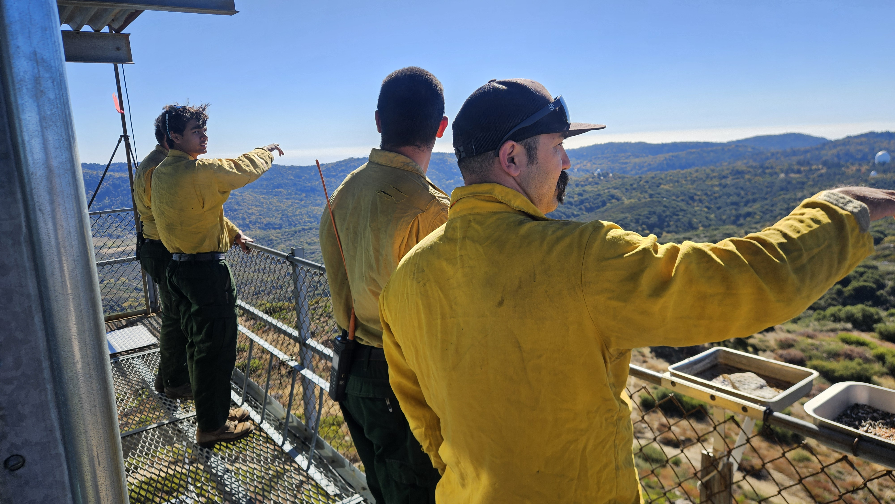
► 2 photos
15:02 / 15:15 — At the 6,140-ft marker, then up on the catwalk, looking down on their own ground.
The register.
Before they head down, the crew signs the visitor register — the cab’s running ledger of who climbed and when. It is a short list. High Point is a restricted tower; in a given year almost no one signs it but agency people — fire and law enforcement — and the volunteers who keep it. So the book is less a guestbook than the tower’s memory: a thin paper record of every watch kept and every rare visitor received, stacking up one line at a time.
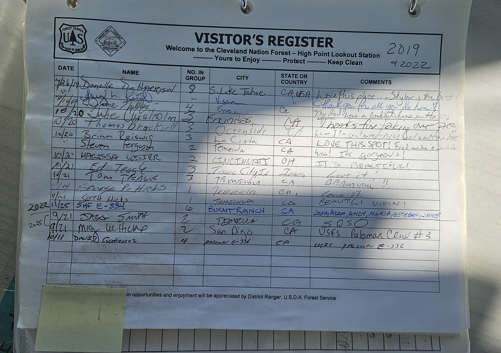
► photo
15:33 — The visitor register — the cab’s paper memory.
Early dinner.
The light has gone long and gold — falafel out of a paper bag, the whole eastern back-country laid out under a sky that’s started to warm at the edges: Mandall Hill, the run of ridges toward Julian, the far desert ranges going hazy-blue. There is no better dining room in San Diego County, and for an hour it is entirely mine.
I eat early on purpose. The shift ends with the light, and I’d rather break now and spend the last good hour outside than eat at dusk — so the plan is simple: dinner, then down to lock the gate and walk the base while the country still has some sun on it, then back up to file the report and settle the tower in for the night.
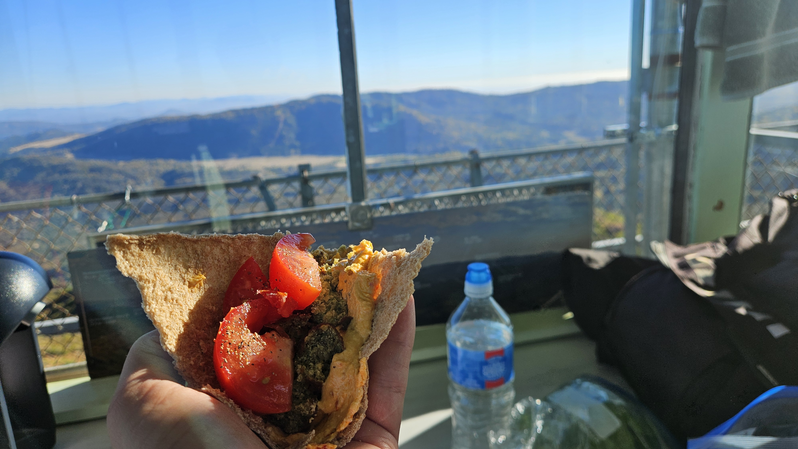
► photo
16:35 — Dinner on the catwalk, the back-country toward Mandall Hill and Julian going gold.
The hillshade hour.
The watch is all but over — and the best report a lookout can give is none at all: no fires on this day, thankfully. So the last of the light is mine. By five the sun is low in the west-southwest — azimuth 250°, just fifteen degrees above the horizon — and the haze has burned off. The light comes in almost level and rakes across the country, and every ridge and canyon that was flat and washed out at noon stands up in relief. A lookout’s whole job is reading terrain; this is the hour the terrain reads back — and I want to be down in it.
But first, one last chore. I lock the Jurassic gate behind me, the tower secured for the night, and only then drop down off the summit to walk the base while the light still holds.
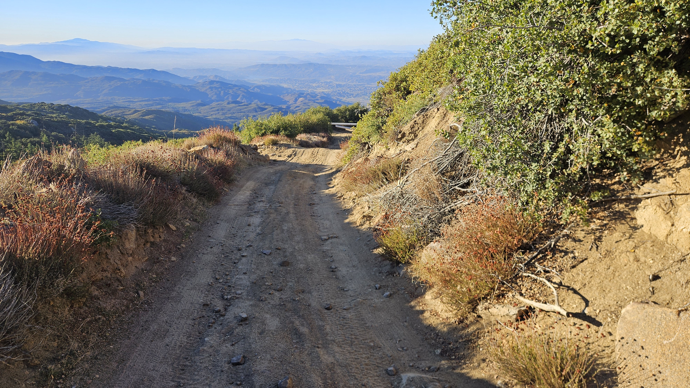
► photo
17:18 — Jurassic locked and secured for the night, the country opening out below.
The observatory.
From the base the other tenant of this mountain comes into view: Palomar Observatory, Caltech’s, its white domes tucked snug into the ridgelines a few miles off. The big one houses the 200-inch Hale Telescope — dedicated in 1948, and for decades afterward the largest telescope on Earth.8 Behind it the marine layer has already crept inland from the coast and banked up against the far ridges, and the low sun fires the whole scene gold.
This is some of the darkest sky in Southern California — and that darkness is the reason the observatory is here, not the other way around. When Caltech went looking for a home for the 200-inch in the early 1930s, Palomar won out for its clear nights, steady air, and distance from the spreading lights of Los Angeles.8 The dark came first; the telescope followed it. To keep it that way, San Diego County now shields its lighting for miles around, and after dusk even a flashlight at the tower gets rationed. The Hale needs the dark — and so, it turns out, does a good naked-eye look at the stars.
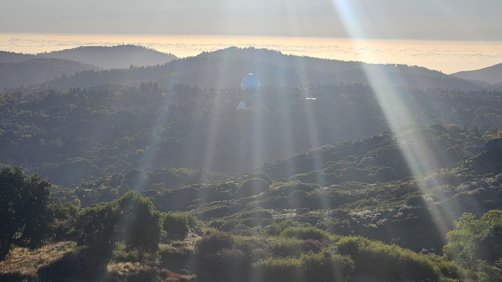
► photo
17:28 — The Hale dome settling into the ridges as the marine layer banks up behind, the last sun breaking through.
Then I just walk it — all the way around the base, the low sun working the land the way no map can. Ridge behind ridge behind ridge, every fold and drainage thrown into relief, the marine layer silver to the west and the desert ranges blue to the east. For a few minutes there is nothing to do but look. The panorama below is the hillshade hour made real, so I’ll let it speak for itself.
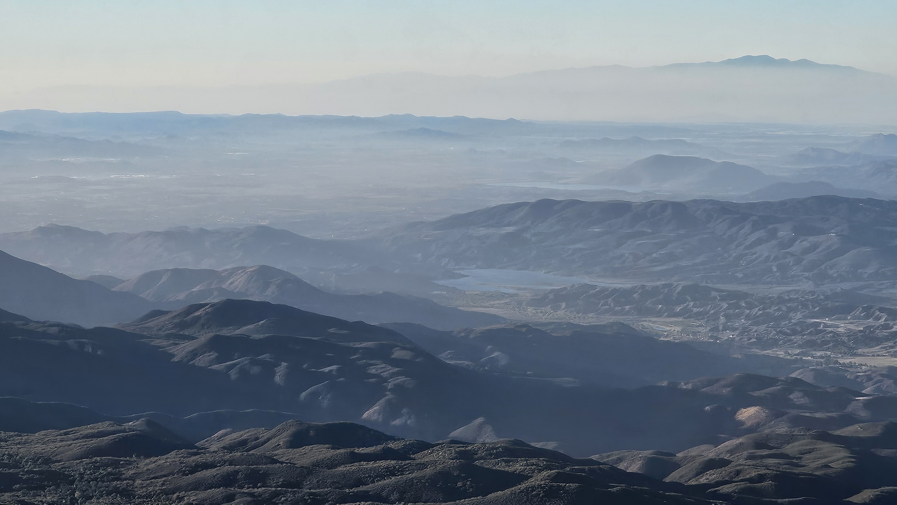
► 19 photos
17:37 — The last light, all the way around — the country in full relief. Browse the series.
And then it’s gone. The sun drops behind the western ridges, the cold comes up off the ground, and the day hands itself over to a different kind of watch.
Squaring away.
Back up the tower while there’s still light to work by. I sweep the cab, square the gear for the night, and open the laptop to file the day’s shift report online — the smoke checks, the weather, the cabinet that came down, the biker, the crew. It posts in seconds, which on a peak this remote still feels like a small miracle.
Field note · A research network on the ridge
The signal that carries that report is no ordinary wifi. High Point rides HPWREN — UC San Diego’s High Performance Wireless Research and Education Network, an NSF-born backbone that connects more than sixty remote fire stations and a regional web of wildfire cameras across San Diego, Riverside, and Imperial counties.9 The same network hauls astronomical data down from Palomar Observatory, just up the ridge.9 So the lookout, the fire-detection cameras, and the great telescope all ride one quiet research link off the same dark mountain.
The glow.
By half past six the marine layer has filled the whole western basin — the coast gone under a floor of silver cloud, the summit riding clear above it. Then the sky does the thing I climbed up here for. After the sun is down the west keeps burning: a deep band of orange and rose stacked over the cloud, a thin green line low on the horizon where the last light bends, and an airplane crossing it all as if we were both up at altitude. For two minutes the tower stops feeling like a building and starts feeling like a cockpit at the edge of the world.
►Play clip · 2:0018:51 — The after-sunset glow over the marine layer, an airplane tracking the horizon. Tap to play in a viewer.
A light on the trail.
It is full dark when I catch it from the catwalk: a small light moving on the mountain below, way-finding up the trail. It stops at the neck of the last switchback, just beyond the Jurassic gate I locked hours ago, and settles in. A person. I go down to see what’s going on.
He has a tripod and a camera. A photographer, he says — shooting a time-lapse. No, not camping; he’ll be gone by ten. I ask him to go easy on the lights, because the observatory is right there and the dark is the whole point of this place. He says he’ll switch to red. I ask if he’s all right; he says yes, and asks me the same; I tell him I’m fine, and that I’m on duty up here. He didn’t know the tower was manned. Good night, then. Good night.
Super weird — and I mean that fondly. I climb back up still wondering what time-lapse in the world he’s framing from that exact spot in the dark. Then it lands: of course. He came up here for the same reason the telescope did.
Field note · Why the dark is the draw
Caltech put the 200-inch Hale on this mountain in 1948 for one resource you can’t manufacture: dark, steady sky.8 It’s the same thing a night photographer hikes up for. And the timing fits — the moon that night was a waning gibbous, about three-quarters lit, and a moon that old doesn’t clear the eastern ridges until late in the evening, so from full dark until nearly ten the sky was genuinely moonless: the one window to shoot before the moonlight washes it all out. Red light is the etiquette that holds it together — it keeps a photographer’s frames clean, protects the observatory’s sky, and saves a lookout’s night vision. Everyone on the mountain ends up guarding the same darkness.
Out of service.
The night passes the way nights pass up here: the photographer’s light gone by ten, the moon up late and bright behind the cab, the stars thick between, the cold settling into the steel. I keep the watch and sleep light. By first light the marine layer is a white sea to the west, and the country comes back ridge by ridge.
The next morning I clean the cab, square the register, and walk it once more — everything left as I found it, which is the whole job. Then I key the radio: High Point, out of service, on my way down to the station. Dispatch copies. The watch is closed.
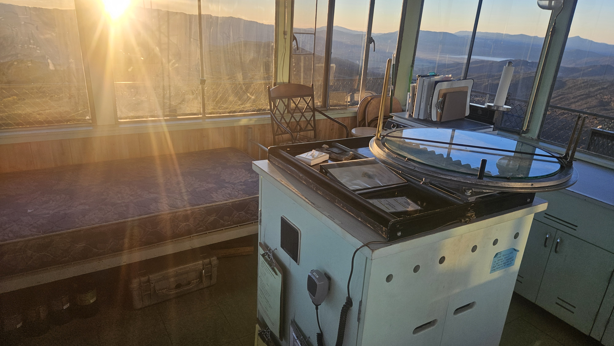
► photo
07:01, the next morning — the cab squared away, ready to radio out of service.
Down off the mountain.
The gate locked behind me, the tower shrinking in the mirror until the trees take it. A day and a night on the tallest tower left in the Forest Service’s California inventory, and then the long ride back down toward the station to close it out properly.
Back at the station.
The second half of the handshake happens down here: I sign the board back in and key the radio one last time — off the mountain, out of the forest, out of service. The day is done.
And for a long time, you weren’t alone for it. Charlie ran the Palomar station — the friendliest firehouse cat you could ask for, who met you in the lot the moment you rolled in and supervised the paperwork like it was his.
►Play · 0:38Rolling back in — Charlie’s welcome. Tap to play.►Play · 0:19The last call — out of service, Charlie supervising. Tap to play.
Field note · For Charlie
These two clips are from a 2024 shift, not this one — a small tribute. Charlie, the friendliest cat the Palomar station ever had, has since gone missing. The handshake is the same every time; for a good while, he was the best part of it.
You go up to keep watch over the country, and somewhere between the long light and the dark it turns around — the country keeps a kind of watch over you. The cloud over San Jacinto, the eagle on the updraft, the biker at the gate, the stranger with his red light and his tripod, the moon coming up late over a sea of marine layer: a day told by the hour, on a mountain that keeps its own time. You come down a little quieter than you went up.
Sources
National Park Service, Division of Ranger Activities. Handbook for Fire Lookouts (1958). npshistory.com. Public domain.
Forest Fire Lookout Association, San Diego–Riverside Chapter. “High Point Lookout” & “Southern California Towers.” ffla-sandiego.org.
NOAA / National Weather Service — Sky Watcher Cloud Chart and San Diego (SGX) fire-weather references. weather.gov. [SGX deep link to verify]
U.S. Forest Service. Fireman’s Handbook, §34.11 — Lookout Duties (June 1966). Public domain. [FSH catalog link to verify]
U.S. Department of Agriculture, Forest Service. Standard Lookout Plans / Lookout Tower Handbook (1938). Public domain.
USDA Forest Service, Pacific Southwest Region. J. Hinrichs, “Standing Watch — The Ongoing Tradition of Fire Lookouts” (2023). fs.usda.gov.
Cornell Lab of Ornithology. “Acorn Woodpecker,” All About Birds. allaboutbirds.org.
Palomar Observatory, California Institute of Technology. astro.caltech.edu/palomar. Home of the 200-inch Hale Telescope (dedicated 1948).
High Performance Wireless Research and Education Network (HPWREN), UC San Diego — an NSF-funded wireless backbone serving remote fire stations, wildfire cameras, and research sites (incl. Palomar Observatory) across San Diego, Riverside & Imperial counties. hpwren.ucsd.edu.